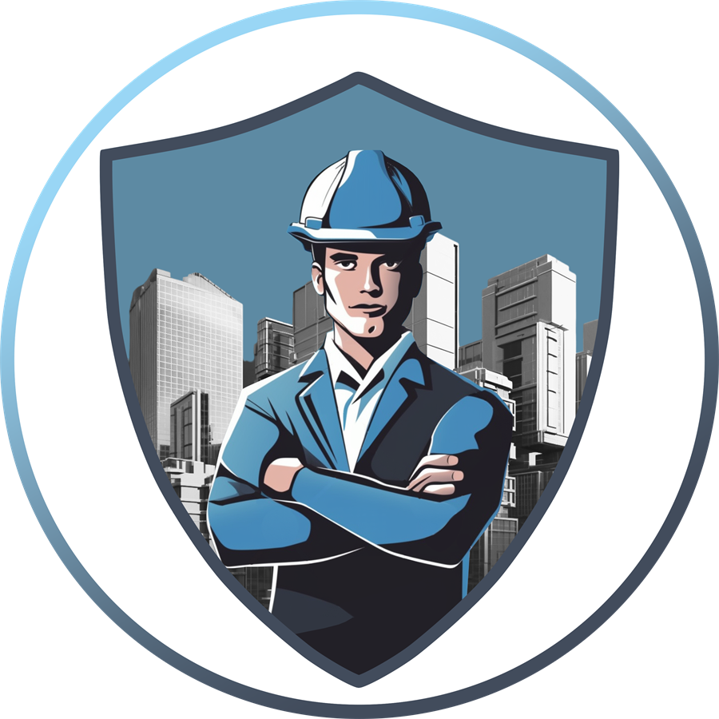
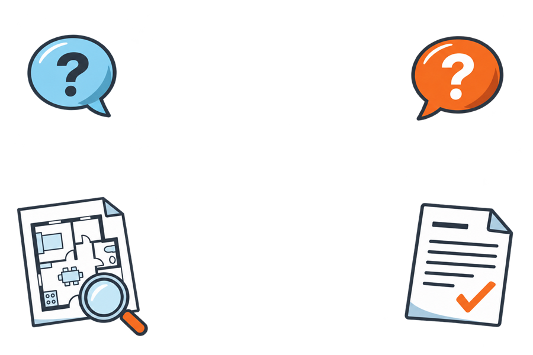

Подобрать специалиста можно заранее, не дожидаясь точной даты осмотра. Когда застройщик пришлёт приглашение, останется уточнить доступное время. Запись подтверждается после проверки расписания специалистов.
Инженеры и юристы
Приёмка, строительная экспертиза и споры: ответы на вопросы
Эксперт Новострой — инженерно-юридическая компания для покупателей новостроек. Здесь собраны ответы о проверке квартиры, строительных недостатках, документах и взаимодействии с застройщиком.


До осмотра
Запись и подготовка к приёмке
Подготовьте название жилого комплекса и корпус, площадь квартиры, тип отделки, дату и время, предложенные застройщиком. Для дистанционного сценария отдельно уточняются документы и полномочия представителя.
Мы проверим ближайшие свободные окна. Возможность выезда подтверждается после сверки графика специалистов.
Приёмка квартиры
Как проходит профессиональная проверка
Квартиру проверяют по утверждённой методике на 195 параметров. В базовую приёмку также входят информационный обмер площади и измерение уровней радиационного фона и электромагнитного излучения. Обмер даёт ориентир по площади, но не заменяет полноценный обмерный план. Состав работ зависит от комплектации квартиры и выбранных дополнительных услуг. Подробнее о профессиональной приёмке.
Результат оформляется актом осмотра с выявленными замечаниями. Посмотрите пример акта осмотра и пример альбома осмотра. Фотофиксация и альбом осмотра предоставляются, если входят в условия выбранного тарифа или подтверждены как бонус.
Да. Самостоятельно можно заметить часть очевидных дефектов. Профессиональная приёмка добавляет системную проверку по методике, измерения и точную фиксацию замечаний.
Форматы и проверки
Когда подходит дополнительный формат
Да, доступен дистанционный формат. Возможность доступа в квартиру, доверенность и полномочия представителя нужно заранее уточнить у застройщика; конкретный порядок зависит от требований к передаче. Узнать о дистанционной приёмке.
Она помогает сверить состояние квартиры с первоначальным актом и проверить устранение отмеченных замечаний. Во время осмотра также можно зафиксировать новые проблемы, если они появились.
Он помогает оценить зоны возможных теплопотерь у окон и стен. Такой осмотр особенно информативен в холодный сезон, если разница наружной и внутренней температуры достаточна; применимость зависит от погодных условий.
Да. Оценка для банка — отдельная услуга, которую можно обсудить вместе с приёмкой. Требования к отчёту уточните в своём банке до заказа. Посмотреть услуги и цены.
После осмотра
Что делать с замечаниями
Передайте замечания застройщику в установленном порядке и сохраните акт, фотофиксацию и переписку. После сообщения об устранении можно рассмотреть повторную приёмку. Если возник спор о причине или объёме дефектов, может понадобиться техническая оценка.
Нет. Эксперт Новострой не управляет действиями застройщика. Компания отвечает за свою часть услуги: провести проверку, зафиксировать замечания и подготовить предусмотренные услугой документы.
Строительные недостатки
Экспертиза и компенсация за недостатки
Инженерная оценка помогает разобраться в характере дефектов и возможных причинах. Юридические требования зависят от документов и обстоятельств спора.
Нет, экспертиза нужна не автоматически. Она может потребоваться, если важно установить дефекты, их возможные причины и стоимость устранения, а обычной фиксации недостаточно или требования оспариваются. Нужна ли она в конкретном случае, зависит от материалов и задачи. Подробнее о строительной экспертизе.
Акт осмотра фиксирует замечания, обнаруженные при осмотре. Строительно-техническая экспертиза решает другую задачу: может помочь установить характер и причины дефектов, а также оценить стоимость их устранения. Для спора иногда требуется отдельное экспертное исследование.
В расчёт могут входить стоимость устранения подтверждённых техническими материалами строительных недостатков, компенсация морального вреда, штраф за отказ застройщика добровольно удовлетворить требование и неустойка за нарушение срока его исполнения. Эти требования применяются не автоматически: юрист проверяет основания и возможную сумму после анализа документов и технических материалов, а окончательное решение принимает суд. Подробнее о компенсации за строительные недостатки.
До решения суда компания рекомендует отказаться от капитального ремонта: если убрать отделку, на которой есть спорные дефекты, подтвердить её состояние может быть сложнее. Можно установить мебель, кухню, карнизы, крючки и полки, покрасить обои, заменить входную дверь, чистовую электрику или сантехнику. Не заменяйте обои, ламинат или плитку от застройщика, если именно к ним есть претензии. Работы в спорной зоне заранее обсудите с юристом.
Просрочка передачи
Неустойка за нарушение срока передачи квартиры
Этот раздел — о ситуации, когда застройщик не передал квартиру в срок по ДДУ. Период и состав требований проверяют по договору, датам и применимым правилам.
В зависимости от обстоятельств требования могут включать неустойку за нарушение срока передачи квартиры, компенсацию морального вреда и штраф, если застройщик отказался добровольно удовлетворить требования и есть основания для его взыскания. Фактическая сумма зависит от ДДУ, дат и действующих специальных правил; её заранее гарантировать нельзя. Подробнее о неустойке за просрочку передачи.
Калькулятор даёт ориентир. Предварительную оценку можно сделать после анализа документов; точный расчёт зависит от периода и обстоятельств. Подробнее о неустойке за просрочку передачи.
Юридическое сопровождение
Как проходит работа по делу
Обычно работа проходит так:
- Согласуем договор и соберём документы.
- При необходимости организуем строительно-техническую экспертизу.
- Подготовим и направим претензию застройщику.
- Если спор не решён, подготовим иск и будем вести дело в суде; при назначении судебной экспертизы сопроводим и этот этап.
- После решения суда получим исполнительный лист и направим его на взыскание.
- Сообщим вам о ходе дела и поступлении денег.
Документы понадобятся в начале; дальнейшие этапы ведёт команда и сообщает вам об изменениях.
Ориентировочный срок — от 6 месяцев до нескольких лет. Срок зависит от загрузки суда, сроков судебной экспертизы, действующих специальных правил, мораториев, постановлений правительства, отсрочек застройщику и других обстоятельств. Это ориентир, а не обещанный срок; оценку по конкретному делу дают после изучения документов.
Нет, заранее гарантировать исход и размер взыскания нельзя. После анализа ДДУ, актов, переписки и других материалов юрист оценивает перспективы и возможные риски. Итог зависит от доказательств, экспертиз и решения суда.
Стоимость
Как узнать актуальные условия
Стоимость зависит от выбранной услуги, параметров объекта и дополнительных проверок. Актуальные тарифы и условия коллективной заявки собраны на странице цен.
Для коллективных заявок из одного жилого комплекса предусмотрены скидки: 10% для группы от 5 до 9 заказчиков, 15% для 10–14 и 20% для 15 и более. Скидка применяется в том числе к минимальной стоимости. Посмотреть условия на странице цен.
Полезные разделы
Выберите направление по своей ситуации
Ваша ситуация
Остался вопрос по новостройке?
Опишите вашу задачу — техническую или юридическую. Подскажем, какие документы понадобятся.
- Уточним стадию и задачу.
- Сориентируем по нужному формату услуги.
- Подскажем, какие материалы стоит подготовить.